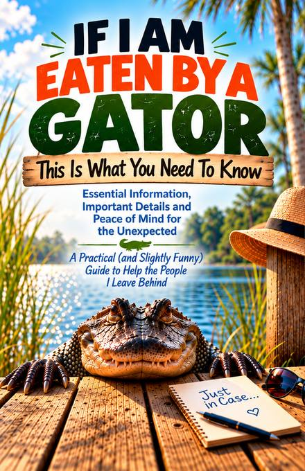
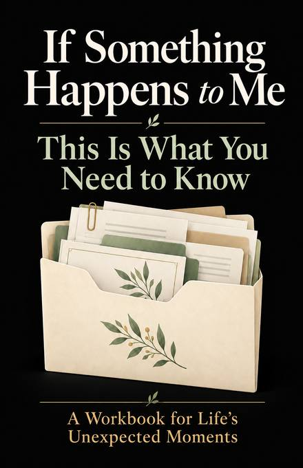

If I Am Eaten By A Gator: This Is What You Need To Know
Essential information, important details, and peace of mind for the unexpected.
A practical—and slightly funny—guided workbook for organizing the information your loved ones may need if life gets unexpectedly interesting.
Updated 120-page paperback edition with guided sections plus a dated notes-and-updates notebook in the back.

- Open Theory CovePublisher / author
- PracticalGuided workbook
- Write-inDesigned to be used
- AmazonPaperback edition
The title is funny. Being prepared is useful.
Nobody expects to be eaten by a gator. That is rather the point. Life has a habit of producing situations we did not schedule, and sometimes the person who knows how everything works is suddenly unavailable to answer questions.
If I Am Eaten By A Gator uses a little humor to make an easy-to-postpone job feel more approachable. The 120-page guided notebook helps you leave a practical trail for the people who may someday need to step in: what needs attention first, who knows what, where records live, how the pets actually behave, and all the little pieces of life that rarely fit neatly into a filing cabinet.
What would someone need to know if you weren't here to tell them?
Imagine someone has just learned that you cannot answer questions. Before they understand your entire life, they need the first useful facts: who to call, who or what depends on you, what cannot wait until tomorrow, and where the records that unlock everything else can be found.
What needs attention today?
Medical equipment, medication, children or other dependents, pets and livestock, home problems, work commitments, alarms, travel, and anything else that becomes harder if nobody handles it quickly.
Who already knows pieces of your life?
The attorney, accountant, employer, family member, neighbor, business partner, or exceptionally organized friend who can help someone find their footing.
Where is the important stuff?
Not merely “in the office.” The book encourages specific locations for identity records, legal documents, financial records, keys, secure storage, medical information, and other essential paperwork.
What exists only in your head?
The house quirk, annual renewal, pet escape trick, recurring favor, sentimental object, family routine, or quiet commitment that nobody would discover by opening a filing cabinet.
What the book helps you organize
Start Here & the First 24 Hours
Create a fast starting point for the first people to call, immediate care needs, animals, medicine, safety, property issues, work obligations, and other time-sensitive responsibilities.
About You, People & Dependents
Record identifying information, useful contacts, children or adults who depend on you, care routines, and the personal details a temporary caregiver may not know.
Pets & the Weird Pet Stuff
Cover food, medication, veterinarian details, supplies, caregivers—and the hiding places, fears, escape tricks, favorite words, and habits that never make it onto a veterinary chart.
Medical & Care Documents
Map current medical information, medications, care-team contacts, insurance records, and the location of formal advance directives or healthcare decision documents.
Legal Documents & Final Arrangements
Identify where current signed documents are stored, who should be contacted, and personal preferences that may save other people from having to guess.
Money, Investments & Benefits
Point people toward institutions, record locations, debts, insurance, retirement plans, pensions, benefits, royalties, rentals, or other ongoing income without making the book a credential vault.
Property, Vehicles & Valuables
Record paperwork, access, maintenance, titles, insurance, keys, sentimental objects, and the stories or intentions that may not be obvious to someone else.
Bills, Subscriptions & Memberships
Show what keeps the household running, what should continue temporarily, what can eventually be canceled, and where payment records are kept.
Work & Business
Provide starting points for employers, benefits, urgent obligations, partners, staff, customers, vendors, bookkeeping, websites, domains, and business transition intentions.
Digital Life
Create a secure route to important devices, recovery systems, cloud files, photos, social accounts, websites, domains, subscriptions, and digital assets without writing every password in the book.
People to Notify & Public Announcements
Think beyond immediate family and record who should hear directly, who may make announcements, and information you do not want shared publicly.
Documents, Keys & Secure Storage
Create an exact locator for documents, keys, safes, safe-deposit boxes, storage, secure cloud vaults, copies, and authorized contacts.
Family, Stories & Personal Messages
Preserve family history, traditions, recipes, memories, keepsakes, messages, and instructions for getting personal letters, audio, video, or milestone messages to the right people.
Things Only I Know
Capture the operational knowledge that lives entirely in your head—from shutoffs and routines to promises, recurring favors, sentimental value, and the things people may later wish they could ask you.
Emergency & One-Page Summaries
Keep especially current pages for emergency contacts, home emergency notes, the people to call first, what needs attention first, and where the core records can be found.
Annual Review
Choose a date you will remember, confirm what is still correct, update what changed, remind trusted people where the book is, and set the next review date.
Because life keeps changing after you fill in the blanks
The guided portion is followed by a large dated notes-and-updates section. It acts as the book's running change log for the information that refuses to stay put: phone numbers change, pets get new medications, accounts move, records get reorganized, and instructions evolve.
Instead of rebuilding the entire workbook every time something changes, you can update the original page or make a dated note explaining the change, the section it affects, and where the current information can now be found. For sensitive credentials, the book again recommends identifying the secure location of the new information rather than writing the secret itself.
A practical gift for the person who has everything except their information organized
Some people already own enough mugs, blankets, and novelty gadgets. This is a gift they can actually write in. The playful title makes the conversation easier to start; the pages underneath it are designed for genuinely useful information.
It can make sense for parents, adult children helping family organize records, caregivers, couples, single-person households, pet owners, homeowners, business owners, or anyone whose response to “Does somebody else know where all of this is?” is a slightly uncomfortable pause.
About If I Am Eaten By A Gator
What is inside the book?
The guided pages cover immediate priorities, contacts, dependents, pets, medical information, legal-document locations, final arrangements, finances, benefits, property, vehicles, valuables, bills, work and business, digital life, people to notify, secure storage, family stories, personal messages, emergency summaries, annual review, and details only you may know. A dated update notebook follows.
How many pages is it?
The current edition is 120 pages. The first portion is guided organization material; the remaining dated pages provide room for ongoing notes and updates.
Who is it for?
It is for adults who want to make important practical information easier for trusted people to find. The prompts can be useful across many household and family situations; readers choose which sections apply to them.
Is it a legal document?
No. It is an organizational notebook, not a will, trust, power of attorney, advance directive, estate plan, or substitute for legal, financial, or medical advice. The book specifically points readers toward the formal signed documents and professionals that control those decisions.
How often should I update it?
The book includes an annual-review page and suggests choosing a recurring date you will remember. Important changes do not need to wait for the annual review—use the dated update pages whenever information changes.
Should I put passwords and PINs in it?
The book advises against turning it into a collection of secrets. It recommends pointing to the secure system or location where current passwords, PINs, combinations, full account numbers, and access instructions are stored.
The information your family should be able to find in an emergency
Our practical companion article walks through the information another person may need to locate, why an organizer should act as a map rather than an unsecured password vault, and how to build the information gradually.
Read the emergency information guideThe same important conversation, with a quieter cover

If Something Happens To Me: This Is What You Need To Know
If the gator makes you laugh but you would rather put a more traditional title on the shelf, explore Open Theory Cove's other guided emergency-information workbook.
See If Something Happens To MeFrom Open Theory Cove
Books made to be useful, approachable, and worth keeping close at hand.